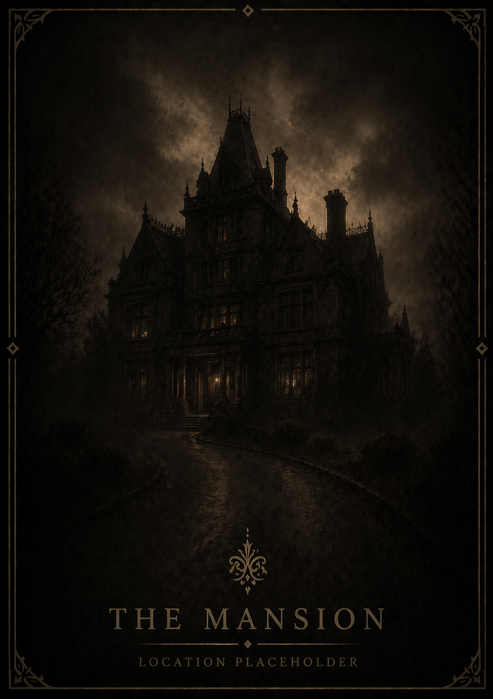
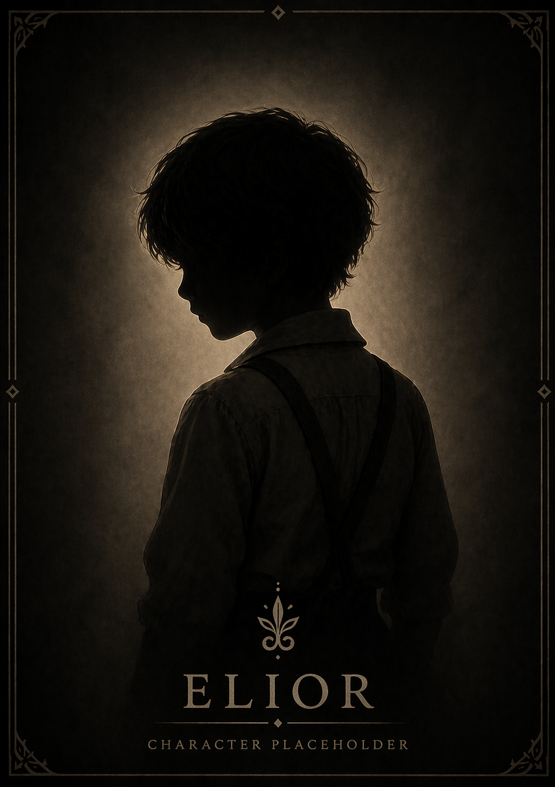
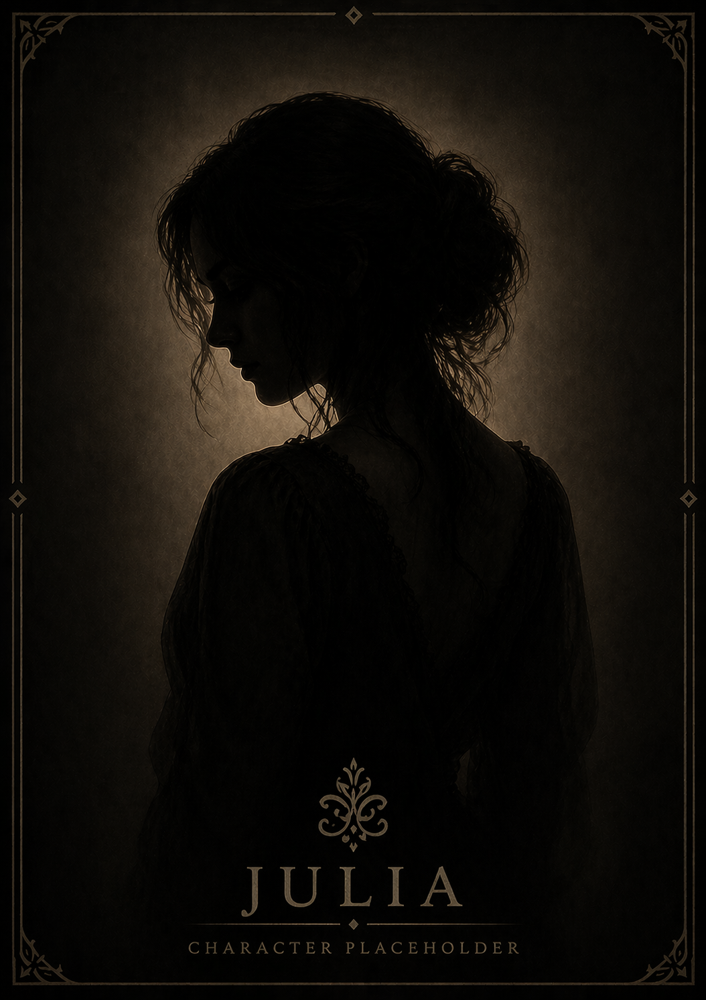
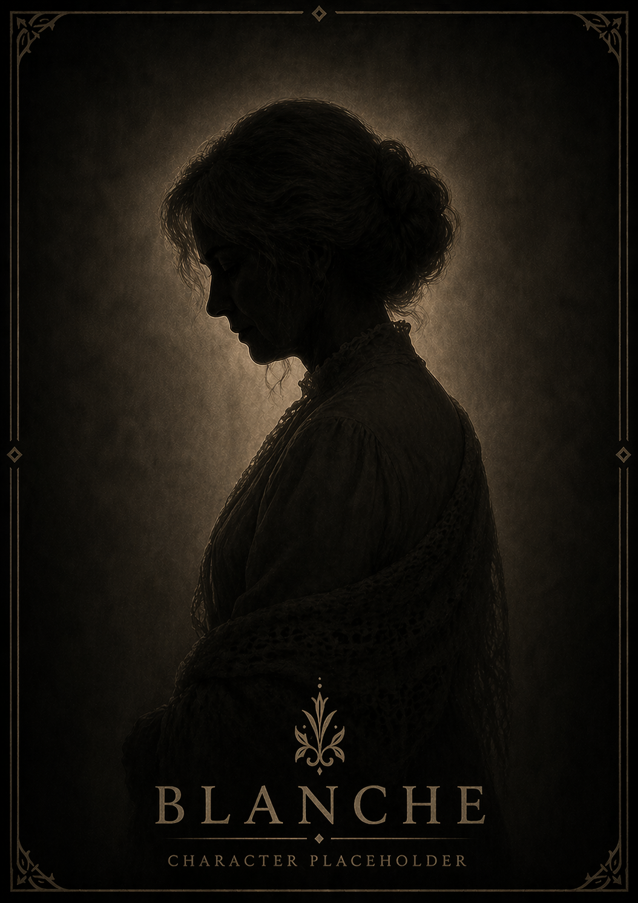

Living Room
The heart of the home, and the place where the final truth waits.
Seven fragments. One truth.
Felix enters the mansion expecting a routine visit. Instead, he finds himself sealed inside a house carrying the remains of a family tragedy. The deeper he searches, the more the walls seem to remember. Somewhere beneath the story of Marcus, Julia, Elior, and Blanche lies something far older, watching from the dark.
Uncover the Truth
About the Game
You weren’t supposed to stay long.
The house was just another listing — quiet, abandoned, and worth more than it should be. But something about it feels wrong. The deeper you go, the more the silence begins to shift.
Fragments of Elior is a psychological horror experience where you step into the role of Felix, a realtor drawn into a home with a past that refuses to stay buried. What begins as a routine walkthrough slowly becomes something far more unsettling, as the house reveals pieces of a fractured family and a presence that never truly left.
This is not just a story told through dialogue. It is told through the environment, through what remains, and through what should not still be there. Every room holds a piece of the truth. Every discovery pulls you deeper into the mystery surrounding Elior.
Some things in this house want to be found. Others do not.
Uncover the truth through objects, rooms, and subtle details.
Slow-building dread over cheap scares and constant noise.
Progress by searching the house and piecing together the past.
A fractured family, a lost child, and a presence still watching.
The house remembers them all.
An inquisitive realtor with a sharp eye for detail. What begins as a simple showing quickly turns into something far more unsettling—where every room holds a fragment of a story that refuses to stay buried.

A quiet presence lingering within the walls. Innocent, unseen… yet never truly gone. Something small continues to guide those willing to look closely
A man defined by responsibility and routine...

Haunted by the past and consumed by regret...

A gentle soul in a house filled with unrest...
The house is more than a backdrop. Each room carries clues, memory, and dread. As the truth unfolds, the environment becomes more unstable and hostile.
The heart of the home, and the place where the final truth waits.
A space tied to Marcus, work, duty, and a life slipping out of control.
A place of innocence, comfort, and the loss that defines the house.
A quiet room full of memory, love, and unfinished threads.
Creating a game concept website to showcase story, design, and development.
Using the mansion itself as part of the storytelling and tension.
Structuring discoveries so each one reveals more of the family’s downfall.